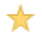

Podemos destacar documentos para darles prioridad de visibilidad, de esta forma se distinguirán con facilidad del resto de documentos mediante una estrella en color amarillo. También podremos acceder a un listado de aquellos documentos destacados haciendo clic en el enlace "Destacados".
Destacar documento: Para destacar un documento, únicamente tendremos que hacer clic sobre el icono con forma de estrella que se encuentra a su izquierda. Hecho esto, el documento aparecerá en el listado de Destacados.